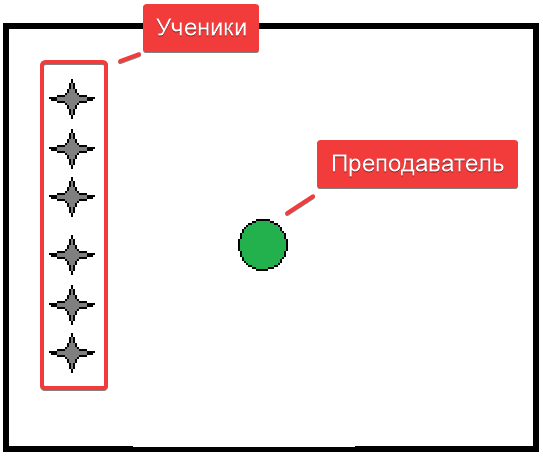
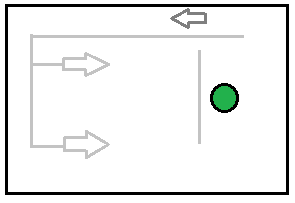
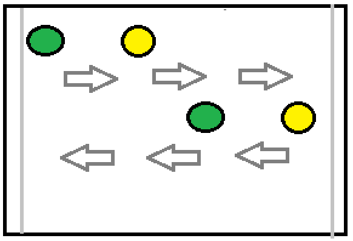
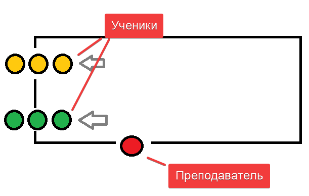
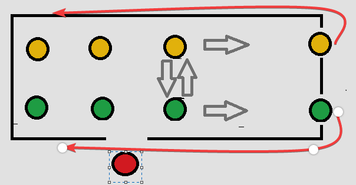
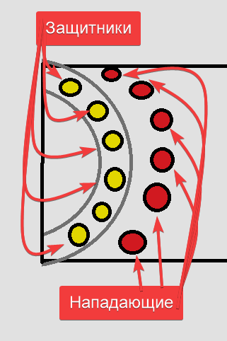

| № |
Частные задачи |
Содержание |
Дозировка |
ОМУ |
| I |
|
Подготовительная на часть |
15` |
|
| 1 |
Способствовать организации учащихся
Постановка учебной цели урока
|
Построение, приветствие, перекличка |
30`` |

Обратить внимание на физическое состояние и форму занимающихся
|
|
Сообщение задач урока |
30'' |
создать общую атмосферу занятия |
| 2 |
Способствовать профилактика плоскостопии и сколиоза |
Ходьба и её разновидности: |
2` |
Темп средний, спина прямая, дистанция 2 шара |
|
- На носках |
20'' |
Руки на пояс |
| - На пятках |
20'' |
Руки за голову |
| - На внутренней стороны стопы |
20'' |
Руки в сторону |
| - На внешней стороне стопы |
20'' |
Руки вперед |
| - Перекатом с пятки на носок |
20'' |
Руки за голову |
| - Полуприседе |
20'' |
Руки на пояс |
| 3 |
Способствовать разминки мышц нижних конечностей |
Бег и её разновидности: |
2` |
Темп средний, спина прямая, дистанция 2 шара |
|
- С высоким подниманием бедра |
20'' |
Бетро поднимать под 90 градусов |
| - Захлестывает голени |
20'' |
Руки работают как при обычном беге |
| - Приставным шагом правым боком |
20'' |
Руки работают снизу в сторону |
| - то же левом боку |
20'' |
| - Скрестным шагом правым боком |
20'' |
Руки в стороны |
| - То же левым боком |
20'' |
| 4 |
Способствует подготовке организма к основной части урока |
Прыжки и его разновидности: |
2` |
Темп средний, спина прямая, дистанция 2 шара, способствувать повышение ЧСС (120 уд/мин) |
|
- Прыжки на правой с продвижением вперед |
20'' |
Руки помогают вытолковать туловище вверх |
| - Прыжки на левый с продвижением вперед |
20'' |
| - Бег с ускорением |
2 x 15m |
Частота движения рук максимальная |
| 5 |
Восстановить дыхание |
Ходьба: |
30`` |
Темп cпокойной, спина прямая, дистанция 2 шара |
|
Упражнение на восстановление дыхания |
|
|
1 - 2 - руки вверх
3 - 4 - руки вверх |
|
Вдох
Выдох |
| 6 |
Способствовать повышению подвижности суставов верхнего плечевого пояса |
ОРУ в движении |
3` |
Темп cпокойной, спина прямая, дистанция 2 шара |
|
И. П. - Руки вперед
1 - 4 - Круговые движения кистями внутрь
5 - 8 - То же наружу
|
4 раза |
Кисть натянута, руки суставах не сгибать |
И. П. - Руки в стороны
1 - 4 - Круговое движение предплечье внутрь
5 - 8 - то же наружу |
4 раза |
Амплитуда движения чуть ниже максимальной |
И. П. - Руки перед грудью
1 - 2 - Отведение согнутых рук назад
3 - 4 - Доведение прямых рук
назад |
4 раза |
И. П. - Руки вверх
1 - 4 - Круговые движения руками вперёд
5 - 8 - То же назад |
4 раза |
| Способствовать разминки мышц туловища и нижних конечностей |
Ходьба выпадами с поворотом туловища в сторону к переди стоящей ноге |
20'' |
Задняя стоящая нога натянута |
| Ходьба наклонными к переди стоящей ноге |
20'' |
Ноги не сгибать, амплитуда максимальная |
| 7 |
|
Перестроение |
30`` |
В колонну по 2, дистанция 3 шага

|
| 8 |
|
ОРУ на месте |
3` |
Фронтальный метод |
|
Способствовать разминки мышц туловища |
И. П. - ст. ноги врозь
1 - руки к плечам
2 - руки вверх
3 - наклон назад прогнувшись, руки всторони
4 - руки вверх
5 - наклон прогнувшись, руки всторони
6 - руки вверх
7 - руки к плечам
8 - И. П.
|
4 раза |
Следить за правельностю выполнения упражнения. Постепенно увеличивать темп упражнения |
| Способствовать разминки мышц спины и нижних конечностей |
И. П. - широкая ст ноги врозь
1 - Наколка правой, руки вперёд
2 - 7 - Пружинящие наклоны к левой
8 - И. П.
9 - 18 - То же в другую сторону
|
2 раза |
Амплитуда движения умеренная |
| Способствовать развитию быстроты |
Прыжки и его разновидности: |
|
Убедиться чтобы ученики не cмогут cтолкнуться друг с другом, после окончания упражнения ходьба на месте |
И. П. - руки на пояс
1 - Прыжок ст ноги врозь
2 - Прыжок правая вперёд
3 - Прыжок левую вперед
4 - Прыжок и п
|
4 раза |
|
и. п - то же
1 - 4 - прыжки по квадрату
|
4 раза |
|
и. п - то же
1 - Прыжок ноги врозь
2 - Прыжок вверх
3 - Прыжок cогнуть ноги вперед
4 - Прыжок вверх
|
4 раза |
|
| 9 |
Восстановление дыхания |
Ходьба на месте
1 - 2 - руки вверх
3 - 4 - руки вверх
|
30`` |
Темп cпокойной, спина прямая |
| II |
|
Основная часть |
25` |
|
| 1 |
Способствовать подготовке мышц организма к основной работе |
Комплекс подводящих упражнения с мячом (специального воздействия) |
3` |
|
|
- передача мяча с места правой рукой на оптимальном (удобном) расстоянии; |
8 раз |
следить за правильностью выполнении передачи |
| - передача мяча с места левой рукой на оптимальном (удобном) расстоянии; |
8 раз |
| - передача мяча с места правой рукой с ударом через середину на оптимальном (удобном) расстоянии; |
8 раз |
| - три шага (левая, правая, левая) передача мяча правой рукой на оптимальном (удобном) расстоянии; |
6 раз |
| - три шага (левая, правая, левая) передача мяча правой рукой партнёру и обратно с продвижением вперед, затем тоже партнер выполняет передачу |
4 раза |
 |
| 2 |
Создать общее представление о техника выполнения передачи мяча сторону |
Рассказ |
1` |
Передача одной рукой сбоку выполняется следующим образом: мяч обхватывается широко расставленными пальцами и прижимается к предплечью; правая рука, повернутая тыльной стороной кисти назад, быстро отводится в сторону. При медленном замахе кисть должна быть несколько развернута ладонью вверх. Левая рука сгибается в локтевом суставе и отводится в сторону замаха. Плечи также разворачиваются вправо. Голова остается повернутой в сторону передачи. Сама передача выполняется резким движением руки вперед с добавочным сопровождением мяча кистью и пальцами в плоскости, почти параллельной поверхности площадки. При этом тяжесть тела переносится на левую ногу. Правая рука, выпустив мяч, но продолжая движение, сгибается в локтевом суставе; левая — выпрямляется и отводится назад. |
| 3 |
Способствовать формированию зрительного представления о технике выполнения |
Показ техники выполнения |
30`` |
|
| 4 |
Способствует усвоению структурных движения |
- Имитация
|
30`` |
Передачу необходимо выполнять на
полусогнутых ногах с распределением
веса тела на обе ноги.
Контроль за правильным держанием
мяча.
Выпрямление руки с конечным
движением кисти – энергичное
сгибание кисти при выпуске мяча.
|
|
- То же c передачей партнёру |
2`` |
| - То же приставными шагами |
2`` |
|
Способствовать организации учащихся |
Перестроение |
30`` |
 |
| 5 |
Способствует усвоению структурных движения в движении |
Передача мяча партнеру в движении |
4` |
Упражнение выполняем от лицевой до лицевой линии

|
|
Способствовать организации учащихся |
Перестроение |
30`` |
 |
| 6 |
Способствовать координации движение в команде |
Передача мяча в команде
|
4` |
Передавать мяч можно только соседи игроку, Когда нападаешь отработали передачу, защитники меняются с нападающими тоже выполняет прием |
| 7 |
Способствовать закреплению освоенного материала |
Учебная игра |
7` |
Играют две команды. Обратить внимание на организацию использования взаимодействий игроков нападения с помощью передач мяча. |
III |
|
Заключительная часть |
5` |
|
| 1 |
Способствовать организации учащихся |
Перестроение |
30`` |
В шеренгу |
| 2 |
Содействовать восстановлению дыхания |
Ходьба
1 - 2 Руки вверх
3 - 4 Ну ты вниз |
1 |
На месте
Вдох
Выдох |
| 3 |
Содействует оценка качества выполнения заданий, мотивация занятий спортом |
Подведение итогов занятия |
3` |
Выделить типичны ошибки при выполнении приёма, похвалить всех за хорошо выполненную работу |
| 4 |
Содействовать самостоятельным занятия физическим Упражнениями
|
Домашнее задание
Поднимание опускание туловища в упоре лежа |
30``
3 x 12 р
|
|